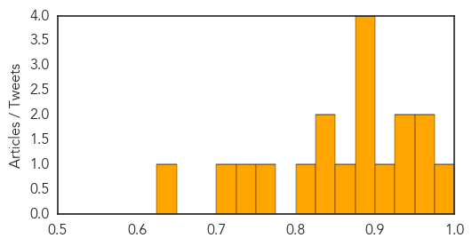
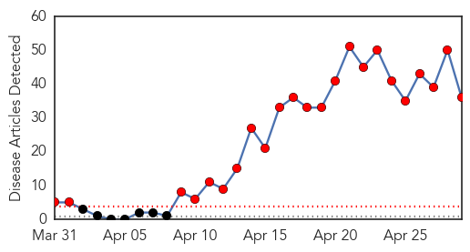

Measles
30-Day Web Trend
7 alerts, 5 warnings

30-Day Twitter Trend
0 alerts, 0 warnings

Article Locations

Article Confidences
Top Articles:
- 0.982
- Measles outbreak declared in Calgary, Edmonton and central Alberta
- 0.952
- Measles outbreak declared in Maguindanao
- 0.952
- Measles outbreak declared in Calgary, Edmonton and central Alberta
- 0.939
- Measles Outbreak in Knox and Coshocton Counties
- 0.925
- Measles Case Reported In New Haven County, 3rd In State This Year
- 0.908
- SGGP English Edition- Media plays important role: Health Minister
- 0.899
- WHO emergency meeting on worldwide spread of polio
- 0.898
- Measles outbreak declared in Calgary, Edmonton and central Alberta
- 0.893
- Man Gets Measles In New Haven County, 3rd Case In State This Year
- 0.881
- Ohio measles outbreak expands
- 0.852
- Nearly Two Dozen Measles Cases Confirmed In The Region
- 0.846
- National Infant Immunization week begins
- 0.841
- Childhood Diseases Making a Comeback: Health Department
- 0.814
- Vietnam minister visits HCMC hospitals, urge measles patient isolation to curb spread
- 0.771
- Chinook's Edge receives measles caution letter
- 0.743
- Saudi- Millions of lives saved with immunizations every year
- 0.712
- Ask Dr. Hallberg: What's behind the resurgence of measles and mumps?
- 0.647
- The Southern Gazette
Top Tweets:
-
No tweets found for Apr 29, 2014
MERS
30-Day Web Trend
23 alerts, 0 warnings

30-Day Twitter Trend
6 alerts, 0 warnings

Article Locations

Article Confidences

Top Articles:
- 1.000
- Saudis: At least 14 new cases of MERS virus
- 1.000
- Nuevo brote del Síndrome Respiratorio del Medio Oriente.
- 0.999
- Indonesian allegedly contracts MERS-CoV in Saudi Arabia
- 0.999
- Saudi Arabia struggles to contain deadly virus, Egypt reports first case
- 0.999
- MERS Cases Spike As Virus Makes First Appearance In Egypt
- 0.999
- Qatar steps up vigilance on Mers
- 0.998
- As MERS Infections Rise, Asia Reflects on SARS
- 0.998
- Two Separate Studies On MERS-Coronavirus Offer Better Understanding Of Newly Emerging Disease
- 0.998
- Arabian Peninsula Infection:Dangerous Mers-virus spreads faster / Breaking News
- 0.998
- Camels Most Likely Spreading Deadly MERS Virus in Saudi Arabia
- 0.998
- MERS virus from camels and humans called indistinguishable
- 0.997
- Amid MERS Worries, Saudi Arabia Advise Citizens Against Camel Products
- 0.997
- And then there were 10, as DOH continues search for Etihad passengers
- 0.996
- Egypt reports first case of MERS virus
- 0.993
- Chinese team's breakthrough may help fight deadly Mers virus
- 0.992
- Columbia researchers extract live MERS coronavirus from Dromedary camels
- 0.991
- Study: MERS-CoV from Saudi camels matches human isolates
- 0.990
- Pilgrims asked to exercise caution against Coronavirus
- 0.989
- MERS-infected Indonesian dies
- 0.988
- Live virus implicates camels in MERS outbreak
- 0.988
- 10 yet to test for corona virus
- 0.987
- Headlines, News, The Philippine Star
- 0.986
- MERS incubation period ends; 10 Etihad passengers untracked
- 0.986
- PH checking reports 3 Filipino nurses in Saudi, UAE contracted MERS-CoV
- 0.982
- Ministry issues warning on MERS
- 0.981
- MERS Virus Found in Saudi Camels
- 0.979
- Doctors find promising MERS-blocking antibodies
- 0.978
- Negros Oriental
- 0.974
- Saudi MERS death toll passes 100 markHealthcare
- 0.974
- 3 new MERS deaths in Saudi Arabia bring total to 105 Bhatkallys.com
- 0.971
- Freeman Opinion, The Freeman Sections, The Freeman
- 0.968
- No New MERS Cases in Greece – Man Home from Gulf Clear
- 0.952
- Greek man returning from Persian Gulf cleared for MERS
- 0.951
- Cebu News, The Freeman Sections, The Freeman
- 0.903
- Saudi camel tradition may hinder control of MERS
- 0.734
- Saudi Health Minister, Adel Faqih, warns against consuming camel meat and milk
Top Tweets:
-
No tweets found for Apr 29, 2014